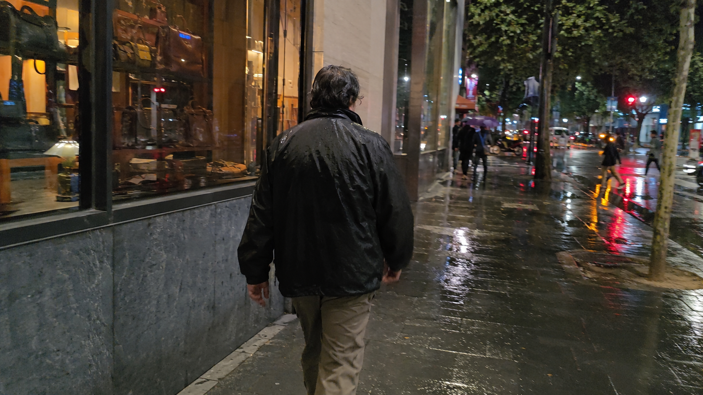

← BACK TO DOSSIERS LIST
CALIBRATION CASE FILE // TREND: HOW TO PROMPT STREET PHOTOGRAPHY IN AI WITH REAL AVAILABLE LIGHT
Forensic Rainy Street Realism: Calibrating Reflections, Motion, and Urban Imperfection for Camera-Grade Images
DATE: 2026-07-26
STATUS: EVIDENCE_DETECTION
ENGINE: CHATGPT DALL-E 3

SPECIMEN IMAGE #16:9 - CLEAN OPTICS
Many AI-generated street scenes still fall into the same visual trap: polished reflections, flawless subjects, and exaggerated cinematic lighting that rarely resembles how real cameras behave on rainy evenings. In authentic street photography, reflections compete with the subject, wet surfaces distort information, and imperfect timing often creates the most believable images. The challenge is not generating more detail, but reproducing the way information is lost, softened, fragmented, and transformed by real-world conditions.
To understand why certain rainy street images feel convincing while others immediately appear synthetic, we need to examine the physical behaviors operating beneath the surface. Reflections, moisture, optics, sensor limitations, and human movement all contribute to realism. However, the most important factor is often hidden in the language itself. As we break down the physical layers below, pay attention to the calibration logic because the true secret to camera-grade simulation emerges through the lexicon shifts revealed in the calibration console at the end of the dossier.
Lexicon shifts replace idealized visual language with physically observable behavior. Instead of describing a scene with terms such as "cinematic lighting" or "ultra sharp," calibration replaces those abstractions with measurable conditions: mixed practical illumination, highlight clipping, sensor noise, reflection distortion, motion softness, and environmental wear. Technical realism metrics prioritize information behavior over aesthetics, evaluating reflection fragmentation, optical degradation, environmental entropy, material aging, focus inconsistency, and low-light sensor performance rather than beauty-oriented visual outcomes.
This brings us back to the original problem: repetitive AI aesthetics emerge when images are described through stylistic shortcuts rather than observable reality. By adopting calibration-driven language and forensic realism principles, creators can generate scenes that feel closer to authentic photography. For those who want a deeper framework, the ALPHA REALISM methodology expands these calibration systems into a complete realism workflow. The full ALPHA REALISM Guide provides advanced lexicon-shift models, environmental realism diagnostics, and camera-behavior calibration techniques designed specifically for creators pursuing documentary-grade image generation.
The 5 Layers of Reality Applied
Subject:
A person walking alone past a shop window on a rainy evening, captured mid-stride with natural gait asymmetry, slight posture imbalance, ordinary clothing showing moisture-darkened areas, realistic fabric tension around joints, non-performative body language, partial facial visibility through reflections, and candid movement unaffected by camera awareness.
Environment:
Wet urban sidewalk with reflective pavement, mixed storefront illumination, practical interior shop lighting spilling onto the street, uneven shadow density, localized highlight clipping around signage, weathered building materials, worn pavement texture, scattered urban clutter, and layered reflections competing with the subject for visual attention.
Physics:
Rainwater creates reflective surfaces and distorted mirror-like reflections, gravity pulls moisture into fabric folds, light bounces between glass and pavement, subtle wind causes irregular garment deformation, moving pedestrians create transient reflection interruptions, and surface water amplifies highlight bloom around practical light sources.
Time:
Visible signs of environmental fatigue including worn concrete, water stains, faded storefront materials, accumulated urban grime, softened paint edges, moisture-darkened surfaces, slight fabric wear, repeated wash aging in clothing, and realistic weather exposure across architectural elements.
Camera:
Handheld smartphone capture using a small sensor in low light, moderate motion softness, imperfect autofocus acquisition, edge softness near frame boundaries, HDR tonal flattening, mild chroma noise in shadows, subtle compression artifacts, wet highlight overexposure, inconsistent sharpness across reflective surfaces, and realistic low-end digital processing behavior.
The Lexicon Shift Table
| Appearance (Dead Adjective) |
|
Living Event (Cause & Effect) |
| perfect skin |
➔ |
skin texture partially obscured by reflections, moisture, and low-light sensor limitations |
| cinematic lighting |
➔ |
mixed storefront illumination with uneven practical light spill and localized highlight clipping |
| heroic walking pose |
➔ |
natural mid-stride movement with slight gait asymmetry and weight shift imbalance |
| crystal-clear reflections |
➔ |
rain-distorted reflections fragmented by pavement texture and surface water movement |
| ultra sharp image |
➔ |
selective sharpness with motion softness, edge degradation, and focus inconsistency |
| clean urban scene |
➔ |
weathered sidewalk, accumulated grime, worn materials, and ordinary visual clutter |
| professional camera look |
➔ |
smartphone low-light capture with HDR flattening, compression artifacts, and sensor noise |
| dramatic rain atmosphere |
➔ |
humidity-softened visibility, reflective surfaces, and practical weather interaction |
Calibration Prompt Console
SUBJECT LAYER: candid street photograph of a person walking past a shop window on a rainy evening, ordinary clothing with moisture-darkened fabric regions, realistic garment wrinkles and tension, natural gait asymmetry, non-performative posture, partial facial visibility through reflections, authentic documentary behavior, preserve identity ambiguity where reflections interfere. ENVIRONMENT LAYER: wet urban sidewalk, worn storefront materials, practical shop lighting, mixed color temperatures, uneven urban clutter, weathered pavement, layered reflections in glass and puddles, ordinary metropolitan visual density, observational street realism. PHYSICS LAYER: rainwater reflections, gravity-driven wet fabric deformation, reflective highlight bloom on pavement, subtle wind influence on clothing, realistic optical interaction between glass, water, and artificial light, fragmented reflection behavior, uncontrolled environmental interaction. TIME LAYER: accumulated grime, faded materials, water stains, surface wear, moisture-darkened textures, realistic urban fatigue, practical environmental aging, ordinary maintenance imperfections. CAMERA LAYER: handheld smartphone low-light capture, imperfect autofocus, edge softness, mild chroma noise, HDR tonal flattening, motion softness, compression artifacts, wet highlight clipping, inconsistent sharpness distribution, realistic sensor limitations, documentary optics, non-cinematic rendering, realism through imperfection --ar 16:9
Do you want to generate precise AI images?
Unlock our alpha realism blueprint, physical reliable framework to get the best of your creations with the ALPHA REALISM Guide.
Download Ebook Now